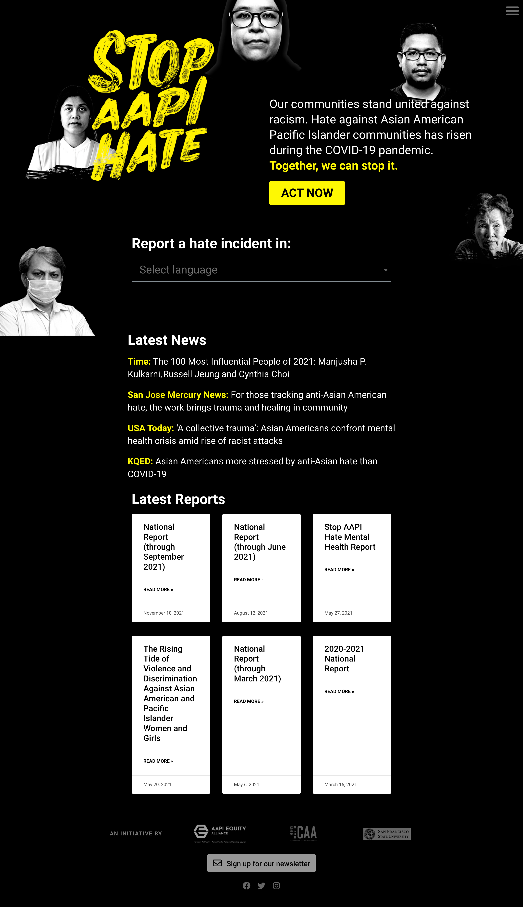

The Stop AAPI Hate website is similar to the CRUD interaction model of my final project. Stop AAPI Hate allow website viewers to report a hate incident in any asian language, which is an inclusive design choice and connects to people emotionally. After choosing a language, users are prompted to type their response in Typeform. At the bottom of the website, you can see official reports such as "National Report" about hate against the Asian American Pacific Islander communities. Although these entries are not generated from viewer's responses, they take the form of notes which still give a look and feel of response boxes, which visually connects to how I want to present my viewer's responses in the final project.
